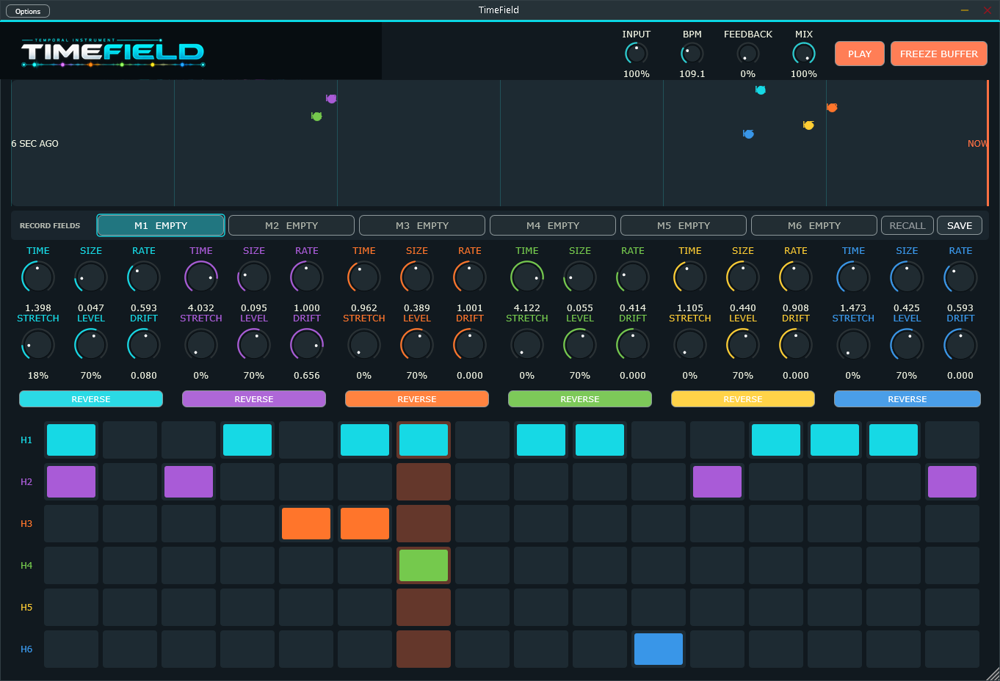
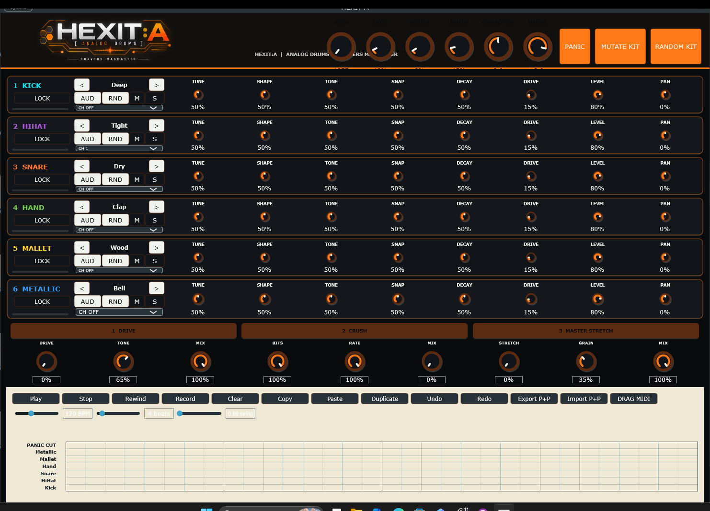
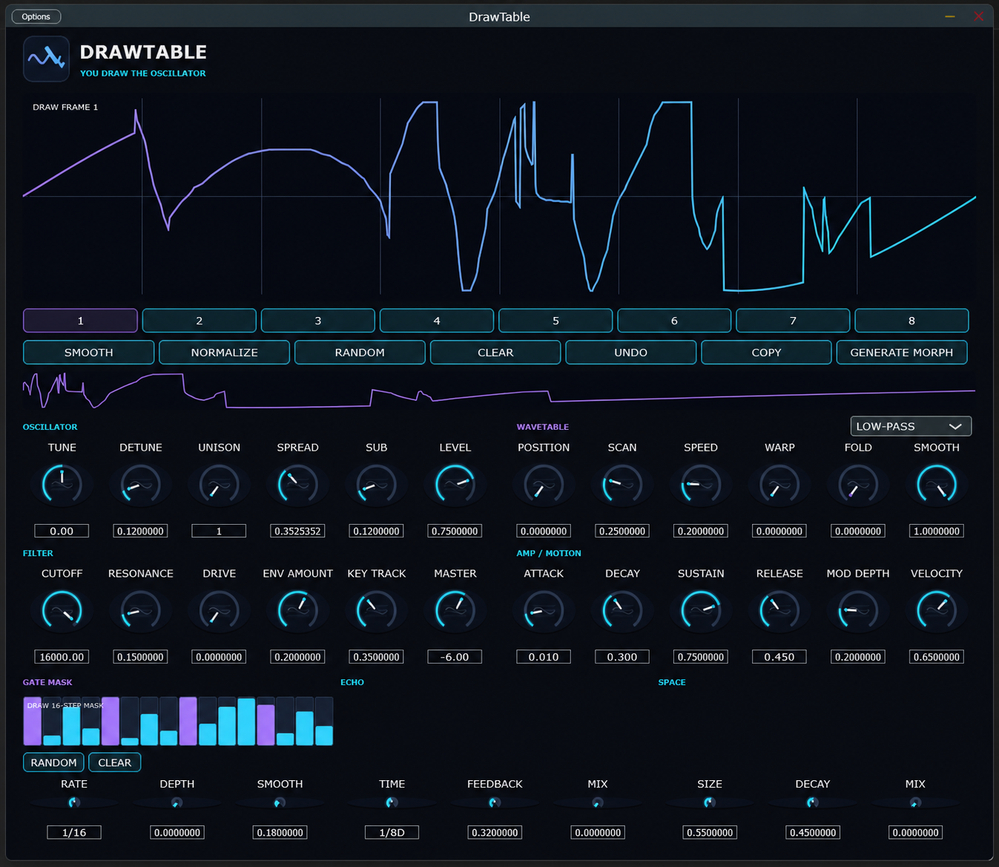
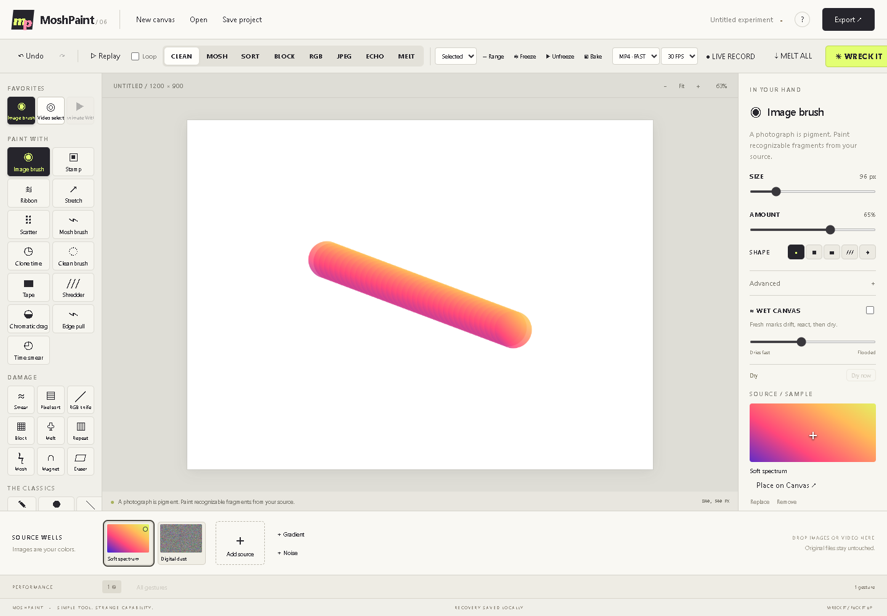

TimeField
01

Audio & visual instruments.
Sound, perception, and motion.
Prototypes / Systems / Investigations
Work in progress. Instruments taking shape through experiments in sound and interaction.




Glitch painting instrument
ALPHA · WINDOWS / WindowsMoshPaint is a Windows glitch art editor and experimental painting tool for painting, distorting, transforming and animating images and video through unconventional digital processes.
Explore machine ⟶